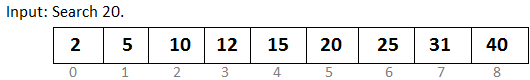

Eg :
const arr = [-2,3,4,7,8,9,11,13]; : Sorted array
Find 11 value's index
1 . Linear Search :
function linearSearch(arr, target) {
for (let i = 0; i < arr.length; i++) {
if (arr[i] === target) {
return i; // Return the index if the element is found
}
}
return -1; // Return -1 if the element is not found
}
// Test the function with the given array and target value
const arr = [-2, 3, 4, 7, 8, 9, 11, 13];
const target = 11;
const index = linearSearch(arr, target);
console.log("Index of", target, "is", index);
1 for loop : O(n) -> 0 (n/2) : Because we go by averyage
2. Binary search
Binary search : example :

step 1. create two pointer : l and r, assign each pointer to each end of the arr
step 2. create another pointer : middle
step 3. left moves to right and found middle, but it is less than target
step 4. then left moves to the middles and makes that its new pointer location
step 5. then new search will be fom there and right also moves
step 6. if right comes to left side and left comes to right side, it mean, no target preset
Eg: Binary javascript
Eg: Shifted Binary javascript